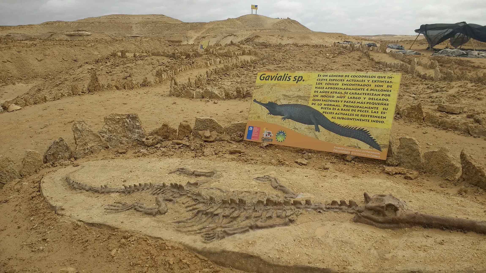

A Window to the Past
Chile is one of the most important paleontological destinations in South America. From the arid Atacama to the frozen tips of Patagonia, the earth reveals ancient secrets of marine giants, prehistoric mammals, and the evolution of our planet over millions of years.

LOS DEDOS (CALDERA)
Prehistoric Giants
This open-air museum is world-famous for fossils dating back over 10 million years. It gained global recognition for the discovery of "Cerro Ballena," a massive graveyard of prehistoric whale fossils.
Key Fact: One of the most important paleontological sites in South America, featuring giant megalodon teeth and extinct marine species.